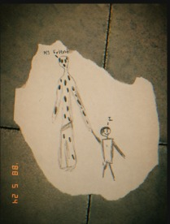

SALA DE EVIDENCIAS
MATERIAL RECUPERADO · MANÉJESE CON GUANTES
EVIDENCIA Nº 001 · “MI AMIGO”
Introducción. En Estados Unidos, unos padres encontraron este dibujo entre las cosas de su hijo: una figura altísima y manchada, tomada de la mano de un niño, con las palabras “MY FRIEND” escritas arriba con letra temblorosa. El menor aseguró que “jugaba” con su amigo por las tardes y que a veces lo veía parado al final del pasillo, mirando. Días después de que UMBRA lo interrogara, el niño desapareció sin dejar rastro. El dibujo apareció rasgado sobre el piso de su cuarto, como si alguien lo hubiera arrancado de un cuaderno a la fuerza. La foto se tomó en el lugar, sobre el mismo piso donde fue hallado.

TOCA LA EVIDENCIA PARA AMPLIAR · BAJA EL VOLUMEN